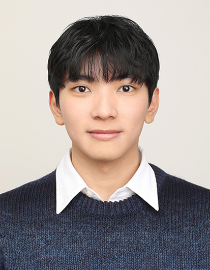

Storage Systems & Operating Systems
이찬용
ChanYong Lee
스토리지 시스템과 운영체제를 연구하고 있습니다. SSD의 내부 구조와 데이터 배치, Linux I/O 스택의 성능을 분석하고 개선하는 데 관심이 있습니다.
GitHub: github.com/lcy0515
Email: chanyong05151@gmail.com

Experience
-
FADU
2026.11 – 현재
Firmware Engineer
Education
-
동국대학교 Dongguk University
2025.09 – 2027.02 (졸업 예정)
컴퓨터공학 석사과정
-
가천대학교 Gachon University
2025.03 – 2025.08
컴퓨터공학 석사과정
-
가천대학교 Gachon University
2019.03 – 2025.02
컴퓨터공학 학사
Research
-
PoZS: An Intelligent Resource Management and Data Placement Scheme for Next-generation Mobile NAND Solution
-
FDP SSD 환경에서 사용자 데이터 분류 정책에 따른 성능 및 WAF 분석
-
eBPF를 활용한 Linux 커널 I/O 스택의 계층별 지연 시간 분석
-
TLC 낸드 플래시 메모리의 특성을 활용한 ZNS SSD 성능 최적화 기술
-
ReZNS: Energy and Performance-optimal Mapping Mechanism for ZNS SSD
-
ZNS SSD의 수명 향상을 위한 스페어 존 기법
-
스페어 존을 활용한 ZNS SSD의 수명 및 성능 향상
-
입출력 요청 인터페이스 분석
Skills
Languages
- C
- C++
- Python
- Shell Script